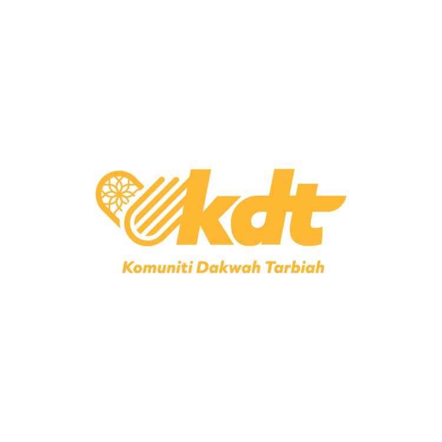

A small humanitarian trip from Malaysia to Aceh, Indonesia. Three concrete initiatives, food aid for 300 families, one village well, and education kits for two schools. 100% of donations go directly to the villages.
We need to hit all three targets before we depart on the 4th of September. Scroll down to fund whichever one moves you.
Coastal villages outside Banda Aceh still struggle with food security after a hard fishing season. We pack 300 family boxes — rice, cooking oil, dry fish, sugar, baby formula — and hand-deliver them village by village.
School supply kits, exercise books, pens, geometry sets, art supplies to support our educational activities. Small budget, biggest smiles.
A 40-metre bore well in an inland village that currently shares one shallow source between 60+ families. Survey, permits, drilling, pump, casing, and a concrete tap stand — handed over to the village council on the final day of the trip.
We're a team of ten volunteers. Every ringgit is logged, every box is photographed, every well GPS pin is published. No overhead, flights and food on us.
We coordinate with the village imam & school heads weeks in advance — no parachute aid.
The five of us cover flights, fuel and food personally. Your gift buys rice, not laptops.
A 20-page photo report goes out by end-July. Every line item, every village, every face.
Ask us for more information any time. Logs are updated regularly on our instagram page

One ringgit fills a bowl. One thousand builds a tap stand. Whatever you can spare, split it across the three projects, or pick the one closest to your heart.
Donate now →Apple Pay · Google Pay